CS229S Crash Course 2: The Transformer, Built from Zero
Crash course 2 of 10 · the transformer
← Chapter 1: the three gaps · Chapter 2 · Next: Chapter 3 — the roofline toolbox →
The problem: one token at a time, with context
Modern AI summarizes documents, answers questions, holds conversations. Different inputs and outputs, one shape underneath: a sequence goes in, a sequence comes out. A sequence model maps an input sequence to an output sequence. In this course every one of them is a tensor of shape (batch, length, dim).
A language model assigns probabilities to token sequences. Given a vocabulary like {lights, off, the, turn}, it might learn P(“turn off the lights”) = 0.03 and P(“off turn the lights”) = 0.0002. The good ordering gets the high number. Modeling whole sequences directly dies three deaths. Sequences have different lengths, so one model cannot score them all. The space explodes: with a 50,000-token vocabulary there are 50,000^10 possible 10-token sequences, a number with 47 digits. And whole-sequence probabilities cannot tell you which word to write next.
The fix is the chain rule of probability. Score each token given the ones before it:
p("turn off the lights") =
p("turn")
x p("off" | "turn")
x p("the" | "turn off")
x p("lights" | "turn off the")
Each factor is one small question: given the words so far, what comes next? Train on 800 GB of text (the Pile corpus), and the product of the answers scores whole sequences. This is next-token prediction. The intrinsic measure of quality is perplexity: how uncertain the model is about the true next word. Low perplexity means rarely surprised.
The machine needs one ability above all: each token’s representation must include its context. “frame” means one thing in “The counselor helped frame the situation” and another in “He hung the photo frame.” Same token, different meaning. Call this a contextual representation. Everything below serves it.
First attempt: the RNN, and its three cracks
Around 2016, the state of the art was the recurrent neural network (RNN). Read the sequence one token at a time, left to right. Keep notes as you go: a vector called the hidden state. When a new token arrives, update the notes. When you need a prediction, read the notes.
h_t = tanh(W_h * h_{t-1} + W_x * x_t)
^^^^^^^^^^^^^^^^^^^ ^^^^^^^^^
faded old notes new token
Watch it work. Two-dimensional vectors. W_h halves the old notes, W_x passes the token through.
tokens: x1 = "the" = [1, 0] x2 = "cat" = [0, 1]
start: h_0 = [0, 0]
step 1: h_1 = tanh(0.5 * [0,0] + [1,0]) = [0.76, 0]
step 2: h_2 = tanh(0.5 * [0.76,0] + [0,1]) = [0.36, 0.76]
Read h_2. The second number (0.76) is “cat”, fresh and strong. The first number (0.36) is “the”, faded but present. Recent tokens loud, old tokens faded. This worked: RNNs powered the best translation and speech systems of their era. But three cracks ran through the design.
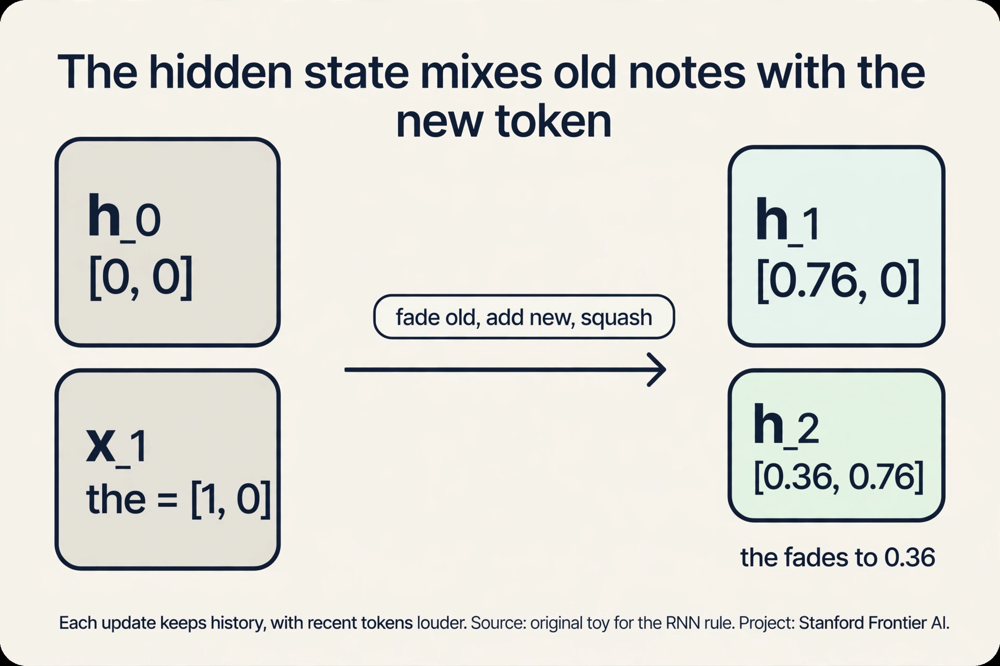
Crack 1: long distances fade. In “The counselor helped frame the situation,” representing “situation” needs “The” from six steps back. Our toy fades by half each step: after six steps, “The” is (0.5)^6 = 0.016 of its original strength. Less than two percent survives. This is the long interaction distance problem.
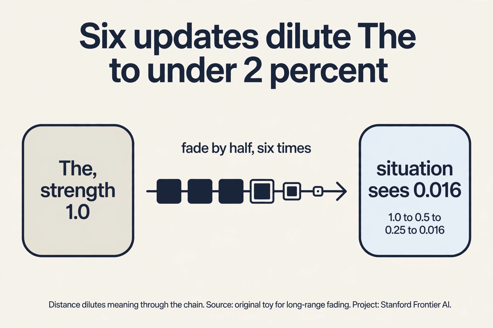
Crack 2: training destabilizes. Training walks the error backward through every timestep (backprop through time), multiplying by the same recurrent matrix each step:
fading weight 0.9, 10 steps: 0.9^10 = 0.35 (gradient shrinks)
growing weight 1.1, 10 steps: 1.1^10 = 2.59 (gradient explodes)
Below 1, the vanishing gradient: early tokens stop learning. Above 1, the exploding gradient: training destabilizes. The safe corridor narrows as sequences lengthen. The network cannot even learn to preserve old information, because the learning signal itself fades on the way back.
Crack 3: the sequence is a queue. h_5 needs h_4, which needs h_3. A 1,000-token sequence means 1,000 sequential steps, no exceptions. A GPU with thousands of cores gets one step at a time. This serial bottleneck mattered most in practice: training cost, not elegance, decides which architectures survive.
The field patched the RNN with gates: learned switches between 0 and 1 that decide what to keep and what to drop. LSTM adds a second track, the cell state c_t, a conveyor belt. Three gates guard it: forget (how much of the old cell to keep), input (how much of the new candidate to write), output (how much of the cell to reveal). The update is c_t = f_t x c_{t-1} + i_t x candidate_t. The key is the addition: old memory is scaled and added, not squashed. With forget 0.9, six steps keep 0.9^6 = 0.53, not 0.016. The gradient rides the same highway: additions, not geometric shrinking. GRU merges the design: one update gate blends old state and new candidate, plus a reset gate. No separate cell state, fewer parameters, nearly the same power.
| Variant | Gates | Separate cell | Params vs vanilla | Fixes |
|---|---|---|---|---|
| Vanilla RNN | 0 | no | 1x | nothing; the baseline |
| LSTM | 3 (forget, input, output) | yes | ~4x | vanishing gradient via the cell highway |
| GRU | 2 (update, reset) | no | ~3x | most of it, cheaper |
LSTMs still run in production speech and on-device systems, and the gate idea lives on inside modern architectures. But gates patch the chain. They do not delete it. The serial queue and the O(N) distance remain.
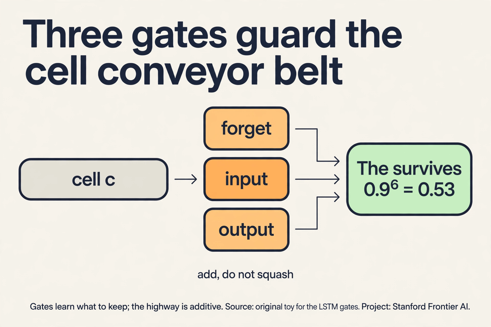
The key question: what if tokens talk directly?
What if tokens could talk to each other directly, skipping the chain entirely? What if “situation” could look straight back at “The” without passing through six rounds of dilution? That question is the transformer.
Attention: a lookup, not a chain
The intuition is a hash table. Every token puts two things in the table: a key (what it contains) and a value (the content it offers). Every token also forms a query (what it needs). To build the new representation of “frame”, compare its query against every key, and mix the values in proportion to the match.
Watch the mechanism by hand. Three tokens, two-dimensional vectors, identity projections:
tokens: counselor = [1, 0] helped = [0, 1] frame = [1, 1]
query for "frame": q = [1, 1]
step 1, scores (dot products of q with each key):
q . k_counselor = [1,1] . [1,0] = 1
q . k_helped = [1,1] . [0,1] = 1
q . k_frame = [1,1] . [1,1] = 2
step 2, softmax (turn scores into weights that sum to 1):
e^1 = 2.72, e^1 = 2.72, e^2 = 7.39; total = 12.83
weights = [0.21, 0.21, 0.58]
step 3, mix the values:
new "frame" = 0.21 * [1,0] + 0.21 * [0,1] + 0.58 * [1,1]
= [0.79, 0.79]
“frame” pulled 21% from “counselor”, 21% from “helped”, and 58% from itself. The numbers came from the data, not from a fixed rule. That is attention. Every token does this, against every other token, simultaneously.
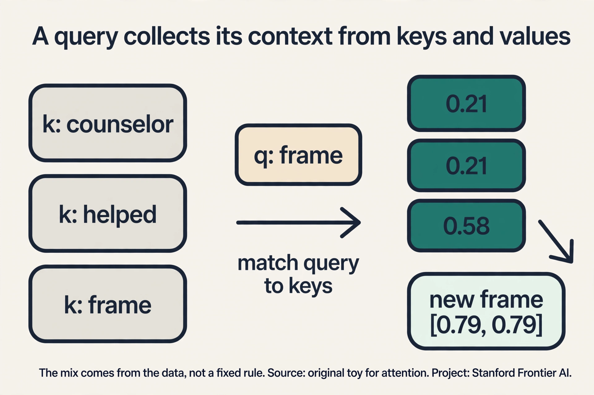
The full computation in four steps
The toy used one query. The real operation runs all queries at once as matrix multiplies. Let N be the sequence length and d the vector dimension. Stack the N token vectors into an N x d matrix X.
- Project three ways. Multiply X by three learned matrices to get queries Q, keys K, values V, each N x d. Three views of the same tokens: what I need, what I contain, what I offer. Training specializes them: one head may learn that verbs query their subjects, another that pronouns query recent nouns.
- Score every pair. O = QK^T, an N x N matrix. Entry (i, j) is the dot product of token i’s query with token j’s key. Every pair meets here, directly, in one step. No chain, no fading, no waiting. This matrix is the entire reason the architecture trains fast and the entire reason it costs O(N^2).
- Normalize. Divide by sqrt(d), then softmax each row. Dot products of d-dimensional vectors have variance d, so in a wide model raw scores spread wildly and the softmax saturates: one weight near 1, the rest near 0, gradients dead. Dividing by sqrt(d) restores variance 1 and keeps every row a genuine distribution. Read row i as “how token i distributes its attention budget.”
- Mix. Output = WV. Each token’s new vector is the weight-blend of all values. The output has the same shape as the input (N x d), which is what makes stacking possible.
Two properties fall out, and both are the point: O(1) interaction distance (any two tokens meet in a single step) and parallel (the N^2 pair scores are independent matrix operations).
Real models stack 12, 24, even 96 of these layers. Each layer refines the representations of the previous one: two hops of reasoning in two layers, deeper layers compose longer chains. The transformer block adds a feed-forward network per layer: if attention is the communication step, the feed-forward net is the computation step. Stacking 96 layers threatens the old gradient enemy, so the residual connection adds each layer’s refinement to its input (output = x + layer(x)), giving the gradient a direct highway back. Layer normalization keeps activations in a healthy range.
Attention, in its many forms
The same four-step skeleton, different rules about who may look at whom.
Self-attention (the default). Queries, keys, and values all come from the same sequence. Every token looks at every token. What the toy computed. What BERT uses. Cost: O(N^2).
Causal attention (the mask). For generation, the future must not leak. Token 3 may look at tokens 1, 2, 3, but never 4. The fix is a mask: before the softmax, set every score (i, j) with j > i to negative infinity. Softmax turns negative infinity into exactly 0. The score matrix becomes a triangle. This is the attention inside every GPT-style model, and the mask is what makes the KV cache possible (Chapter 5): when token N+1 arrives, rows 1..N never change.
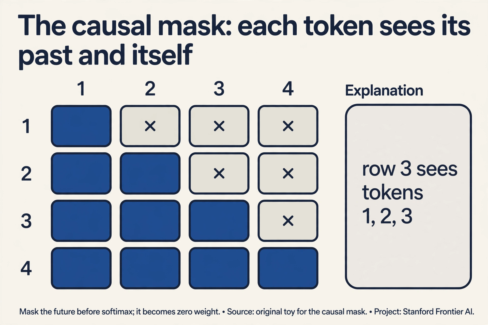
Cross-attention (two sequences). Queries come from one sequence, keys and values from another. In translation, the English decoder asks and the French encoder answers. Same four steps; the Q and K/V matrices just come from different places. The bridge inside every encoder-decoder model.
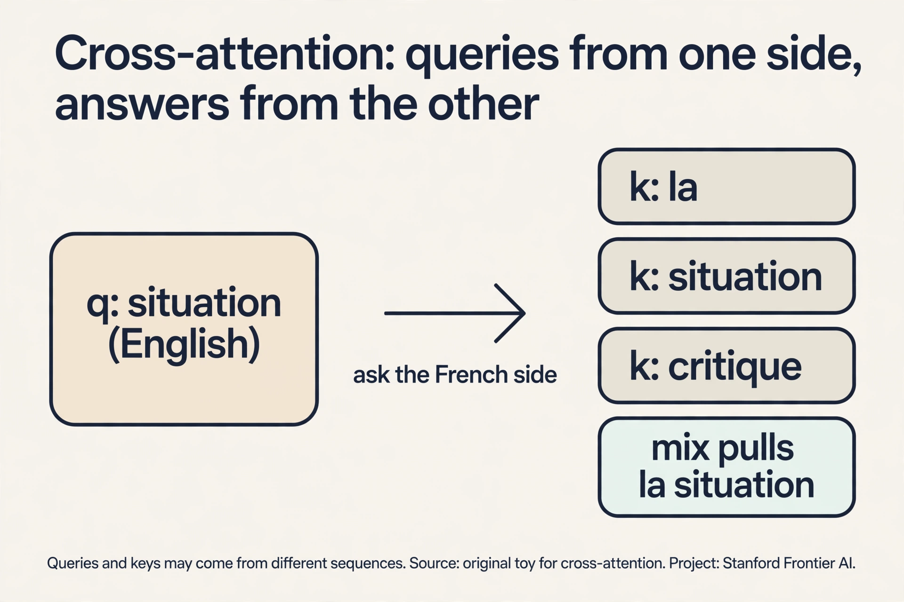
Sliding-window attention (Mistral). Each token attends to the W most recent tokens instead of all N. Cost drops from O(N^2) to O(N x W). With W = 4,096, a 32K-token document costs 8x less than full attention. Stacked layers recover long range indirectly: layer 2 reaches 2W back through layer 1’s windows, like a relay race. Mistral 7B made this famous. The budget answer to long context.
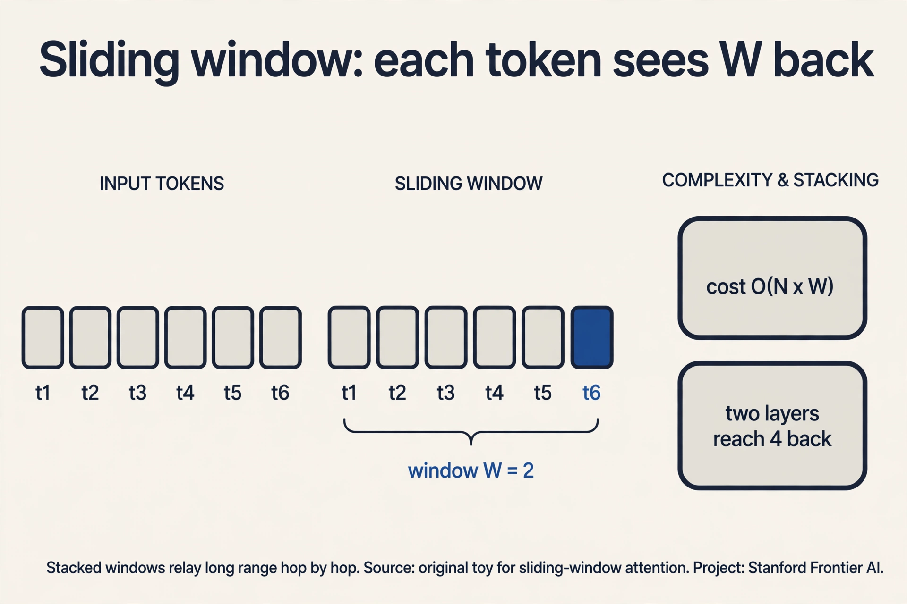
Multi-head attention (many relations at once). One attention computation produces one set of weights: one way for tokens to relate. Multi-head runs H independent attentions in parallel, each with its own learned Q/K/V projections in a smaller subspace (dimension d/H), then concatenates the mixes and projects back to d. Head 1 gave weights [0.21, 0.21, 0.58]: “frame” cares mostly about itself. A second head might give [0.7, 0.2, 0.1]: “frame” cares about “counselor”. Concatenated, the token carries both facts. Trained models confirm the specialization: some heads track syntax, some track position, some track rare words. One wide head cannot do this: a single softmax is one vote, not several.
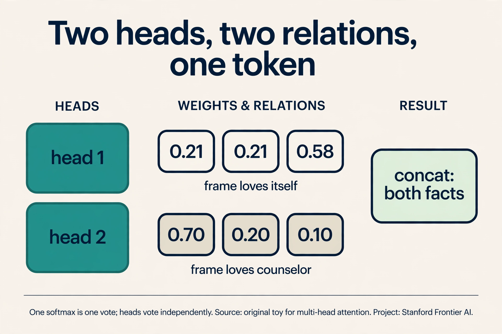
Position without a chain. Attention is permutation-invariant: shuffle the tokens and every row shuffles identically. “dog bites man” and “man bites dog” give the same scores. The RNN got order for free (position was time). The transformer must inject it. The original paper added sinusoids of many frequencies: each position gets a unique wave-pattern, and a fixed offset is a rotation, so relative distance stays expressible. Modern models use RoPE (rotary position embedding): it rotates each query and key by a position-dependent angle, so the dot product itself shrinks as two tokens drift apart. Relative distance, baked into the score.
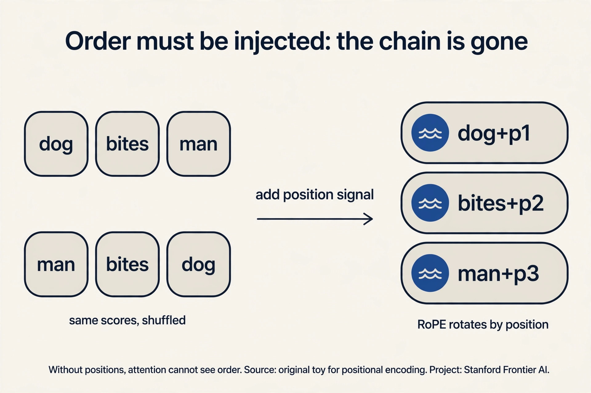
Linear attention and FlashAttention (the frontier). Linear attention rewrites the softmax as a kernel feature map so the sums reorder: O(N) instead of O(N^2), at the price of approximation quality. FlashAttention keeps exact attention but tiles the computation so the N^2 matrix never sits in slow memory: same math, 2-4x faster, far less memory. Chapter 6 builds it from zero. Chapter 9 covers the modern descendants (Mamba drops attention entirely).
Mapping back: what each property fixes
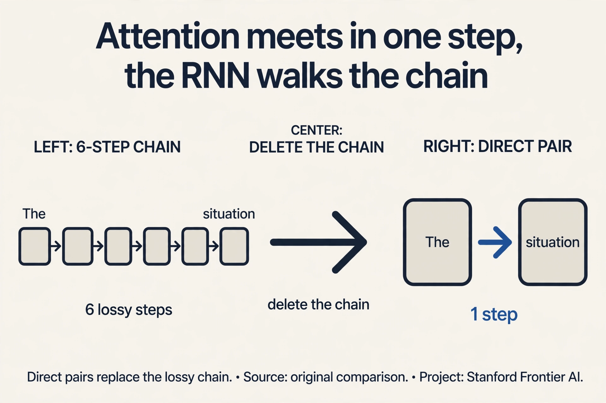
| RNN crack | Transformer answer | How |
|---|---|---|
| Long distances fade | O(1) interaction distance | Every pair meets in one step through the score matrix. No chain to dilute the signal. |
| Gradients vanish/explode | Short paths | The learning signal flows back through one attention layer, not N chained multiplications. |
| Serial bottleneck | Parallel matrix ops | All N^2 scores compute simultaneously. Thousands of GPU cores stay busy. |
This is why the transformer won. Not because attention is mysterious, but because it deletes the chain. Training dominates cost at scale, and the architecture that trains in parallel on huge data wins, even if each step costs more.
The honest price: quadratic
Deleting the chain has a price, written in the score matrix. O is N x N: every token pairs with every token. Double the sequence length and the work quadruples. For N = 4,096, that is 16.7 million scores per layer per attention head, most of which must sit in memory. This single fact drives the rest of CS229S. Chapter 5 shows why the autoregressive step is memory-bound. Chapter 6 (FlashAttention) recomputes instead of storing. Chapter 9 asks whether attention-free architectures can dodge the bill. The transformer won training. The course is about paying for inference.
Three ways to use a transformer
- Decoder-only (GPT). Each token sees only the tokens before it. A mask enforces the left-to-right order. The objective is next-token prediction. Use the final token’s representation to generate text.
- Encoder-only (BERT). Each token sees everything, both directions. The objective is span prediction: mask some tokens and predict them. Bidirectional context, but no generation.
- Encoder-decoder (translation). The encoder reads the input with full context. The decoder generates the output left to right while attending to the encoder. Worth it when input and output differ in kind.
The difference is only the mask and the objective. The attention mechanism is identical.
What is used where: the real models
Every production model is a point in this chapter’s design space: what may each token see, how is position injected, and how is the quadratic bill paid. Facts as of October 2026.
| Model | Shape | Attention | Positions | The bill | Why this choice |
|---|---|---|---|---|---|
| GPT-3 / GPT-4 | decoder-only | causal multi-head | learned absolute | full O(N^2) | generation needs the mask; scale pays the bill |
| BERT | encoder-only | bidirectional | learned absolute | full O(N^2) | understanding needs both directions; no generation |
| T5 | encoder-decoder | self + cross | relative bias | full O(N^2) | input and output differ in kind; cross-attention bridges them |
| Llama 3 | decoder-only | GQA, causal | RoPE | GQA shrinks KV | open weights; grouped queries cut the cache |
| Mistral 7B | decoder-only | sliding window + GQA | RoPE | O(N x W) | long context on a budget |
| Gemini 1.5 | decoder-only MoE | full attention | (not public) | scale + sparsity | 1M-token context as the product feature |
| DeepSeek-V3 | decoder-only MoE | MLA | decoupled RoPE | latent KV cache | 671B params, 37B active; the cache holds a 512-dim latent, not full K/V |
| DeepSeek-R1 | decoder-only MoE | MLA | decoupled RoPE | latent KV cache | same backbone as V3; reasoning comes from RL training, not architecture |
| Mamba-2 | no attention | selective SSM | none needed | O(N) | the RNN strikes back: recurrence with learned gates, no pairs at all |
Read the table as answers to this chapter’s questions. Llama 3 uses GQA (grouped-query attention): query heads share KV heads in groups, so the KV cache shrinks by the group size with almost no quality loss. The middle ground between full multi-head (big cache) and multi-query (one KV head, weaker).
DeepSeek-V3 goes further with MLA (multi-head latent attention). Instead of caching full keys and values per head, it compresses them into one 512-dimensional latent vector per token and reconstructs per-head K/V on the fly during attention (the up-projections fold into other matrices, so full K/V never materialize). The cache holds the latent, not 128 separate vectors: compression by rank instead of by head count. Position uses a decoupled RoPE stream alongside the latent, because rotary embeddings cannot survive the compression. This is the state of the art in paying the quadratic bill: keep the attention math, shrink what you store.
Mamba-2 refuses the trade entirely. No pairs, no score matrix: a selective state-space model, a grown-up RNN whose gates are input-dependent. Time and memory scale linearly in N. The bet: recurrence was never the problem. Fixed recurrence was.
Two honest caveats. Gemini’s and GPT-4’s internals are not public; the table records what their makers announced and marks the rest unknown. And “best” depends on the job: Mamba wins long sequences, BERT-style encoders win classification, decoder-only wins generation.
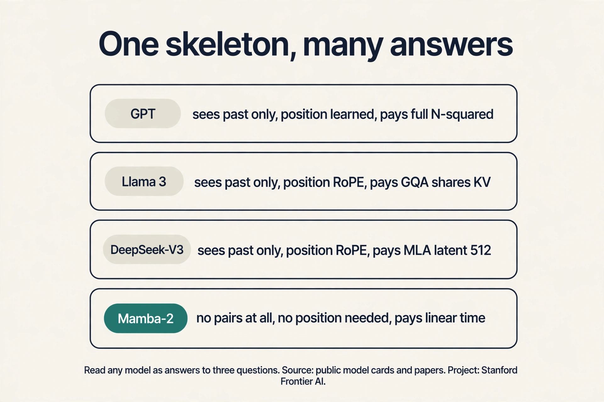
Memory aids
Mnemonic — the four attention steps: “PQSM”: Project (Q, K, V), Query-key scores (QK^T), Scale by sqrt(d) and Softmax, Mix (WV). PQSM: every token asks, everyone answers, the scores scale, the values mix.
Never-confuse pairs:
- Self-attention (Q, K, V from one sequence; every token sees every token) vs cross-attention (queries from the decoder, keys and values from the encoder; bridges two sequences) vs causal attention (self-attention plus the mask; the future gets zero weight).
- O(1) interaction distance (path length: any pair meets in one step) vs O(N^2) cost (work: the pair matrix has N^2 entries). Short path, expensive step.
- LSTM forget gate (scales the old cell: 0.9 keeps memory alive) vs input gate (writes the new candidate) vs output gate (reveals the cell as the hidden state). Forget looks back. Input looks at now. Output shows the mix.
- GQA (query heads share KV heads in groups: cache shrinks by group size) vs MLA (K/V compressed to one 512-dim latent per token: compression by rank). GQA shares heads. MLA compresses vectors.
If-this-then-that:
- Generation task → decoder-only with the causal mask. Reading task → encoder-only, bidirectional. Translation → encoder-decoder with cross-attention.
- 1M-token context on a budget → sliding window (Mistral) or selective SSM (Mamba), not full attention.
- KV cache too big → GQA, then MLA. The cache is the bill (Chapter 5).
- Softmax saturates in a wide model → you forgot the sqrt(d) scale. The classic “trains but learns nothing” bug.
Trap card — “interviewers love to ask”:
Dot products grow with dimension. For random vectors of dimension d, the dot product has variance d, so scores spread wider as models get bigger. A wide-spread softmax saturates: one weight nears 1, the rest near 0, and the gradients through the tiny weights die. Dividing by sqrt(d) brings the variance back to 1 and keeps the softmax in its responsive range. It is a one-line numerical hygiene step with a real training effect. In small models, little. In large models (d in the thousands), attention collapses onto a single token per query early in training and never recovers. It is one of the standard “the model trains but learns nothing” bugs.
Self-test
Three concrete failures. Information faded over long distances because the hidden state diluted every token through every intervening update: (0.5)^6 leaves under 2 percent. Gradients vanished or exploded because backpropagation multiplies once per timestep: 0.9^10 is 0.35, 1.1^10 is 2.59. And the chain was serial: step t waits for step t-1, leaving thousands of GPU cores idle. Attention deletes the chain: every pair of tokens meets in one step, all pairs compute in parallel, and gradient paths stay short. The quadratic price. Attention costs O(N^2) memory and compute in sequence length, which punishes very long sequences. Recent architectures (S4, Mamba, linear attention) try to keep the RNN’s linear scaling while fixing its training problems. This is the subject of Chapter 9.
Three views of the same token, made by three learned projections. The key says what the token contains. The query says what the token is looking for. The value is the content the token offers if chosen. Attention compares each query against all keys, turns the matches into weights, and mixes the values by those weights. In the worked toy, “frame” with query [1,1] matched keys with scores [1,1,2], giving weights [0.21, 0.21, 0.58] and a new vector [0.79, 0.79]. Because “what I need” and “what I contain” are different jobs. A token might need context about verbs while containing noun information. Separate learned projections let the model specialize each role. With one shared representation the query and key spaces would be forced identical, which limits what matches can be expressed.
The score matrix O = QK^T has one entry per token pair: N^2 entries. Each needs computing, and naive implementations store all of them: 16.7M floats per layer per head at N = 4,096. Memory, not arithmetic, becomes the bottleneck, because every entry must be read and written. That is why this course exists: FlashAttention, KV caching, and efficient architectures are all answers to the quadratic bill. No. When generating token N+1, the keys and values for tokens 1..N are unchanged, so you store them and compute only the new row. The per-step cost drops from O(N^2) to O(N). The cache itself then becomes the memory problem at long contexts, which is the subject of Chapter 5.
One attention computation produces one set of weights: one way for the tokens to relate. Multi-head runs H independent attentions in parallel, each with its own learned Q/K/V projections in a smaller subspace (dimension d/H), then concatenates the results and projects back to d. Each head works in dimension d/H. Language has many relation types at once. In the toy, head 1 gave weights [0.21, 0.21, 0.58]: “frame” cares mostly about itself. A second head might give [0.7, 0.2, 0.1]: “frame” cares about “counselor”. Trained models confirm the specialization: some heads track syntax, some track position, some track rare words. One wide head cannot do this: a single softmax is one vote, not several.
It does not, until you tell it. Attention is permutation-invariant: shuffle the input rows and the queries, keys, values, scores, and outputs all shuffle identically. The RNN got order for free: position was time. The transformer deleted the chain, so it must inject order another way. The original paper used sinusoids of different frequencies: each position gets a unique pattern, and shifting by a fixed offset corresponds to a rotation, so relative distances stay expressible. Modern models use rotary embeddings (RoPE), which rotate each query and key by a position-dependent angle so the dot product itself depends on relative distance. Either way, position 1 and position 3 now carry different queries, and the scores differ. Relative. What “frame” needs to know is that “counselor” sits two tokens back, not that it is position 7 in the document. That is why the field moved from absolute sinusoids to relative and rotary schemes.
The LSTM keeps two tracks: the hidden state and the cell state, a conveyor belt for long-term memory. Three learned gates, each a sigmoid between 0 and 1, guard it. The forget gate decides how much of the old cell survives. The input gate decides how much of the new candidate gets written. The output gate decides how much of the cell becomes the visible hidden state. The cell update is c_t = f_t x c_{t-1} + i_t x candidate: old memory is scaled and added, not squashed through a matrix. In the toy, a forget gate of 0.9 keeps “The” at 0.9^6 = 0.53 after six steps, against 0.016 for the vanilla RNN. The gradient rides the same highway: the cell path is a chain of additions, so the error signal flows back unmultiplied instead of shrinking geometrically. Gates patch the chain but keep it. The LSTM still reads token t after token t-1: the serial queue remains, and interaction distance is still O(N). Attention deletes the chain entirely, which buys parallelism and O(1) distance at the cost of O(N^2) memory.
Start from the bill: full attention at N = 1M needs 10^12 score entries per layer per head. That does not fit anywhere, so full attention is out. The options: sliding-window attention (Mistral’s answer) cuts the cost to O(N x W) and recovers range through stacked layers, at the price of indirect long-range paths. GQA or MLA (Llama’s and DeepSeek’s answers) keep full attention but shrink what gets stored: MLA’s 512-dim latent per token is the most aggressive public design. Mamba-style SSMs drop attention for O(N) recurrence. In practice the frontier answer is a hybrid: Gemini 1.5 ships 1M context on full attention plus MoE sparsity and massive scale, DeepSeek pairs MLA with a 128K window. The interview signal: name the exact bottleneck (the N^2 score matrix and the KV cache, two different costs), then pick the tool that attacks the binding one. Memory, twice over. The score matrix is 10^12 entries (4 PB in fp32 per layer per head: impossible), and even with FlashAttention avoiding materialization, the KV cache at 1M tokens is tens of gigabytes per layer. Compute is large but parallel. Memory capacity and bandwidth are the walls. That is why every 1M-context design attacks storage first.
Go deeper
- Attention in transformers, step-by-step (3Blue1Brown): https://www.youtube.com/watch?v=eMlx5fFNoYc
- Attention Is All You Need (Vaswani et al., 2017): https://arxiv.org/abs/1706.03762
- Full lesson: Lecture 2
← Chapter 1: the three gaps · Chapter 2 · Next: Chapter 3 — the roofline toolbox →